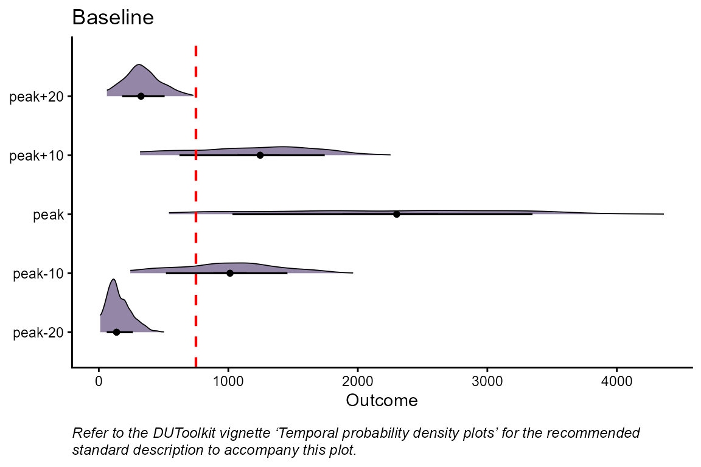

Temporal probability density plots
temporal_plot.RmdDecision-makers may also want to consider how risk changes over the modelled time range. To do this, we plot the probability densities over time. The probability density of the highest (or lowest if the threshold is a minimum) projected outcome across simulation runs is plotted in the center of the graph for a given policy alternative. Above and below, the probability density of the outcome at specified time points relative to the time of the highest (or lowest) project outcome is plotted to visually illustrate how uncertainty, and therefore risk, changes over time. The decision threshold is shown directly on the plot as a vertical line to provide a clear reference point for interpreting the outputs.
First, we find the model output value at the specified time points
relative to the peak value for each simulation run using the
get_relative_values() function. In our example, we will
find the hospital demand every ten days for up to 20 days before and
after the peak hospital demand.
# define inputs
tmin <- min(psa_data$Intervention_1[, 1]) # minimum simulation time
tmax <- max(psa_data$Intervention_1[, 1]) # maximum simulation time
Dt_max <- TRUE # indicates the threshold values are maximums
D <- 750 # single threshold value for the peak
t_s <- 20 # total number of time steps from the peak
t_ss <- 10 # time step increments to move in
## find peak values
peak_values_list <- get_max_min_values(psa_data, tmin, tmax, Dt_max)
# find values for temporal density plots
peak_temporal_list <- get_relative_values(psa_data, peak_values_list, t_s, t_ss)
head(peak_temporal_list$Baseline[[1]])
#> time outcome N
#> 1 peak 4207.443 1
#> 2 peak 1681.521 2
#> 3 peak 2539.177 3
#> 4 peak 2969.721 4
#> 5 peak 3073.741 5
#> 6 peak 1520.144 6We then use the plot_temporal() function to generate the
temporal probability density plots.
# generate peak temporal density plots
peak_temporal_plots <- plot_temporal(peak_temporal_list, D)
## example plot
peak_temporal_plots$Baseline
The sum_stats_temporal() function can be used to calculate
summary statistics (n, mean, median, and IQR) for the model output
values at the time step relative to the peak value.
# generate summary statistics for peak temporal data
stats_peak_temporal <- sum_stats_temporal(peak_temporal_list)
stats_peak_temporal$Baseline
#> time_step n q1 median mean q3
#> 1 peak-20 813 90.32 136.99 157.21 210.21
#> 2 peak-10 813 738.29 1013.14 1005.52 1260.49
#> 3 peak 813 1520.14 2300.14 2247.85 2982.81
#> 4 peak+10 813 884.80 1246.00 1211.20 1548.80
#> 5 peak+20 813 247.77 326.34 338.76 418.55Sharing outputs
The probability density plotted in the center of the peak temporal
plot (labelled ‘peak’) is the same probability density that is plotted
with plot_density() function and
plot_raincloud() function. The temporal probability density
plots can further supplement these probability density plots by showing
how uncertainty changes over time for each scenario.
We also recommend the following standard description for presenting the temporal probability density plots to decision-makers. We provide the standard description in paragraph and bullet point form for ease of use.
Standard description
These graph visually illustrates how uncertainty changes over time by showing the distributions of the forecasted outcome1 over time. The distribution in the center of the plot represents the peak2 outcome3. The distributions above and below show the outcome at different time points relative to the peak4, both forward (above) and backward (below) in time.
The red dashed line indicates the policy target. A greater area to the right5 of this line means a higher risk of outcome6 exceeding7 the policy target at the specified time. Scenarios where the area to the right8 of the policy target is more quickly reduced as you move away from the peak9 result in a shorter periods of time at higher risk of not achieving the policy target.
Standard description bullet points
These graphs visually illustrates how uncertainty changes over time:
The distribution in the center of the plot represents the peak10 outcome11.
The distributions above and below show the outcome at different time points relative to the peak12, both forward (above) and backward (below) in time.
The red dashed line indicates the policy target.
A greater area to the right13 of this line means a higher chance of the outcome14 exceeding15 the policy target at the specified time.
Scenarios where the area to the right16 of the policy target is more quickly reduced as you move away from the peak17 result in a shorter time frame of higher uncertainty.